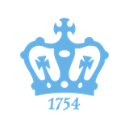

About
I'm finishing my M.S. in Business Analytics at Columbia University, where I graduate in December 2026. Most of my work sits where analysis meets a decision: finding the step in a funnel where users leave, designing the experiment that tests a fix, and building the pipeline that makes the answer repeatable.
I've done this for consumer products at Tencent and a mobile games studio, for clinicians at NewYork-Presbyterian Hospital, where I built surgical risk models, and for strategy teams at Meituan, where I turned recurring reports into AI agent workflows and wrote the checks that made their output trustworthy.
I work mostly in SQL and Python, and I care about results that a non-technical stakeholder can act on. I'm looking for full-time data analyst and data scientist roles starting in early 2027. The best way to reach me is by email.
Experience
-
May – Aug 2026
AI Analytics Intern · MeituanBeijing
- Packaged recurring reporting workflows into reusable agent skills used across teams, saving about 10 hours of manual analysis a week.
- Built an evaluation framework for agent-generated reports (SQL accuracy, extraction completeness, metric consistency) that cut recurring errors by 24.5%.
- Built a dashboard for brand anomaly analysis to speed up root-cause investigation.
-
Jan – May 2026
Data Analyst Intern · NewYork-Presbyterian HospitalNew York · Columbia capstone
- Built multivariable models of mortality and length-of-stay risk on 20 years of data from 1,500+ neonatal cardiac surgeries, used in weekly multidisciplinary case conferences.
- Designed a pipeline for REDCap exports with 100+ variables, cutting manual case preparation by about 30%.
- Presented risk scores, confidence intervals, and top contributing factors to the clinical team.
-
Nov – Dec 2024
Data Analysis Intern · Tencent VideoBeijing
- Ran a retention analysis on 12.1M users, located the drop-off after the first completed video, and designed an A/B test on the recommendation flow that raised next-video play rate by 4.5%.
- Mapped user journeys with SQL window functions and compared retained and churned users in Python.
-
Jan – Mar 2024
Data Analysis Intern · Beijing Xinshichuangyu TechnologyBeijing · Mobile games
- Raised player participation 18% by finding entry-to-match drop-offs and testing a redesigned event flow.
- Built D1 retention datasets from 300K+ player records and sessionized 2 GB+ of gameplay logs.
-
Jul – Aug 2023
Risk & Compliance Intern · EYBeijing
- Validated 150+ physician engagement and reimbursement records a day with SQL and Excel, and automated reconciliation checks in Python.
-
Jan – Dec 2022
Data & Operations Analyst Intern · Beijing TFlying Transducer TechnologyBeijing
- Replaced manual exports with Python ETL scripts, cutting report preparation time by about 60%.
Selected work
Why viewers stopped after one video
Retention for 12.1M users fell sharply right after the first completed video. I traced the journey step by step in SQL, compared users who came back with those who didn't, and proposed a change to the recommendation flow. The A/B test raised next-video play rate by 4.5%.
Surgical risk for the case conference
Clinicians reviewing high-risk neonatal cardiac cases needed a structured comparison against twenty years of past surgeries. Our capstone team built the data pipeline and risk models, and reported each case as a risk score with a confidence interval and its main contributing factors.
Making AI-generated reports trustworthy
Agents were writing weekly and monthly business reports, but errors slipped through. I wrote an evaluation framework that checks each report's SQL, data extraction, Excel stitching, and metric consistency before it ships, which cut recurring errors by 24.5%.
Education & skills

Columbia University
M.S. in Business Analytics (STEM), Columbia Business School and Columbia Engineering
Capital University of Economics and Business
B.Mgt. in Information Management and Information Systems
- Languages
- SQL, Python (pandas, NumPy, scikit-learn, statsmodels), R, MATLAB, Java
- Methods
- A/B testing, experiment design, funnel and retention analysis, regression, gradient boosting, forecasting
- AI
- AI agents, agent evaluation, prompt engineering, RAG, MCP, function calling
- Tools
- Tableau, Power BI, Excel, MySQL, Git, AWS, GCP, Azure